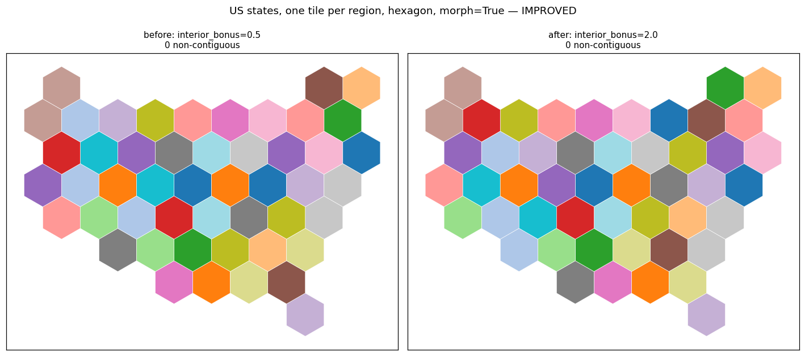
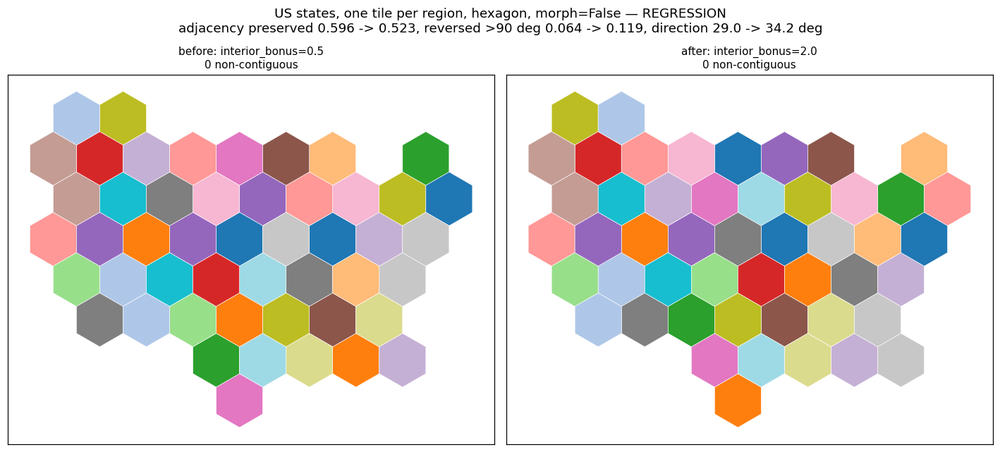
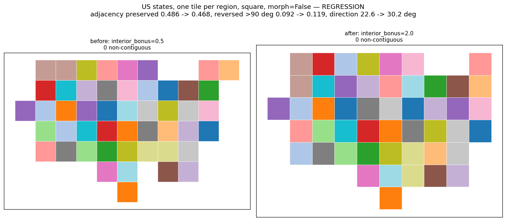
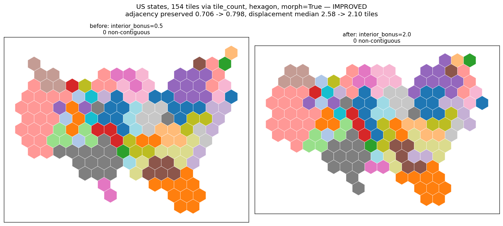
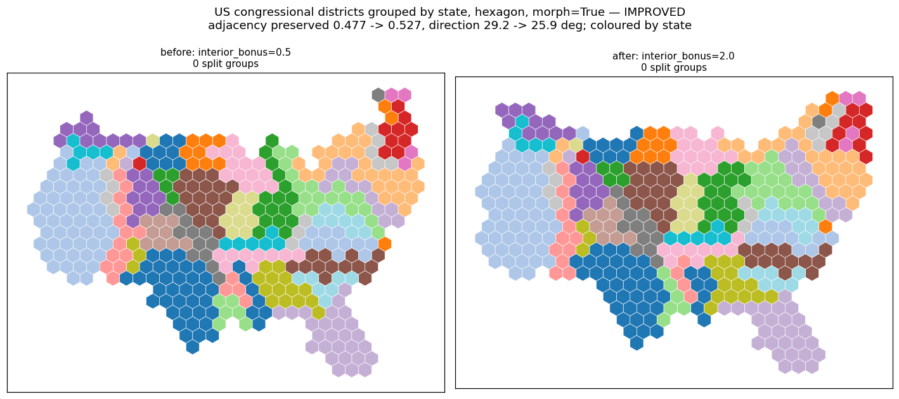

Tighter per-region tile blocks. Better on 6 of 8 measured panels, worse on the two one-tile-per-region morph=False panels.
HungarianOptions.interior_bonus: 0.5 -> 2.0. The connectivity bonus is subtracted from a tile's cost in proportion to how many of its lattice neighbours are also in the pool, so raising it makes each region claim a tighter, rounder block and pushes the leftover surplus to the periphery.
Both sides of every figure come from the same source tree with interior_bonus passed explicitly, so the only difference between any two panels is the value.
symbol per region with morph=False the new default places symbols worse: fewer geographic neighbours end up adjacent, and more pairs end up on opposite sides of each other than before. It shows on both tilings, so it is a property of the change rather than of the hexagon lattice.
region owns several tiles (04) or where a group must stay whole (05) — exactly what the bonus acts on.
region; all five are 0/0 on both sides. The differences here are all fidelity, not integrity.
Eight panels: four input/tiling combinations x morph in {True, False}. Positive = the new default is better on that axis.
| input | morph | adjacency | displacement | direction | reversed >90 | better |
|---|---|---|---|---|---|---|
| 1 tile/region, hexagon | True | +0.028 | +0.04 | −2.3 | +0.028 | **2.0** |
| 1 tile/region, hexagon | **False** | **−0.073** | +0.01 | **−5.2** | **−0.055** | **0.5** |
| 1 tile/region, square | True | +0.009 | +0.13 | +7.5 | +0.018 | **2.0** |
| 1 tile/region, square | **False** | **−0.018** | −0.06 | **−7.6** | **−0.028** | **0.5** |
| 154 tiles | True | +0.092 | +0.48 | 0.0 | +0.028 | **2.0** |
| 154 tiles | False | +0.028 | +0.35 | −0.6 | +0.028 | **2.0** |
| districts, group_by | True | +0.050 | +0.07 | +3.3 | +0.043 | **2.0** |
| districts, group_by | False | +0.016 | +0.11 | +3.4 | 0.000 | **2.0** |
The two losses are both the one-tile-per-region morph=False panels. A user on that combination should pass interior_bonus=0.5 explicitly to keep the previous behaviour.
A seven-value sweep (0, 0.25, 0.5, 1.0, 2.0, 4.0, 8.0) over the same eight panels found that 0, 0.25, 1.0, 4.0 and 8.0 each introduce a split group or a non-contiguous region on at least one panel. Only 0.5 and 2.0 are clean everywhere. 8.0 had the best fidelity numbers in several panels and is ruled out on integrity alone — two split groups on districts with morph=False.
The knob is strongly non-monotonic: on one tile per region with hexagons and morph=True its adjacency curve runs 0.651, 0.761, 0.697, 0.569, 0.725, 0.716, 0.771 across those seven values, with a deep trough at 1.0 between two peaks. Values between the tested ones are not bounded by them.
Found through an existing test fixture at a tile count the sweep did not cover — US states at ~300 tiles, shipped 16-hop swap-back reach:
morph=True: 1 enclosed unassigned tile where 0.5 left none, whilestranded core tiles drop from 4 to 3.
morph=False: stranded core tiles rise from 9 to 11, no enclosed holeseither way.
Neither is a split group or a non-contiguous region, so neither breaks the topology guarantee, but both are regressions on a related axis.
Only US inputs, only hexagon and square tilings, only these tile counts. interior_bonus was varied alone with the other three HungarianOptions cost weights at their defaults; a different neighbor_weight or distance_weight could move which value is best. Inputs with islands, a zero-value sizing column, or non-US geography were not tested.

IMPROVED. One tile per region, hexagon, morph=True. Adjacency preserved 0.697 -> 0.725, reversed >90 deg 0.092 -> 0.064.

REGRESSION. One tile per region, hexagon, morph=False. This is the case that gets worse. Adjacency preserved 0.596 -> 0.523, reversed >90 deg 0.064 -> 0.119, direction 29.0 -> 34.2 deg.

REGRESSION. Same case on a square tiling, so the regression is not a hexagon artefact. Adjacency preserved 0.486 -> 0.468, reversed >90 deg 0.092 -> 0.119, direction 22.6 -> 30.2 deg.

IMPROVED, and the largest gain measured. 154 tiles via tile_count, morph=True. Adjacency preserved 0.706 -> 0.798, displacement median 2.58 -> 2.10 tiles, reversed >90 deg 0.037 -> 0.009.

IMPROVED. 432 districts grouped by state, morph=True, coloured by state. Adjacency preserved 0.477 -> 0.527, direction 29.2 -> 25.9 deg, displacement 4.59 -> 4.52 tiles.